Radiator and A/C Condenser Fan Low Speed Circuit Troubleshooting
Radiator and A/C Condenser Fan Low Speed Circuit TroubleshootingNOTE:
- Do not use this troubleshooting procedure if the A/C compressor is inoperative. Refer to the symptom troubleshooting index Symptom Related Diagnostic Procedures.
- Before performing symptom troubleshooting, check for powertrain DTCs.
1. Check the No. 15 (30 A) fuse in the relay block, and the No. 30 (10 A) fuse in the under-dash fuse/relay box.
Are the fuses OK?
YES - Go to step 2.
NO - Replace the fuse(s), and recheck. If the fuse(s) blow again, check for a short in the No. 15 (30 A) and No. 30 (10 A) fuse(s) circuit.
2. Remove the A/C condenser fan relay from the relay block, and test it.
Is the relay OK?
YES - Go to step 3.
NO - Replace the A/C condenser fan relay.
3. Connect the HDS to the DLC.
4. Turn the ignition switch ON (II).
5. Turn on the A/C.
6. Check the FAN LOW CTRL in the PGM-FI Data List with the HDS.
Is the FAN LOW CTRL on?
YES - Go to step 7.
NO - Substitute a known-good PCM, and retest. If the symptom/indication goes away with a known-good PCM, replace the original PCM.
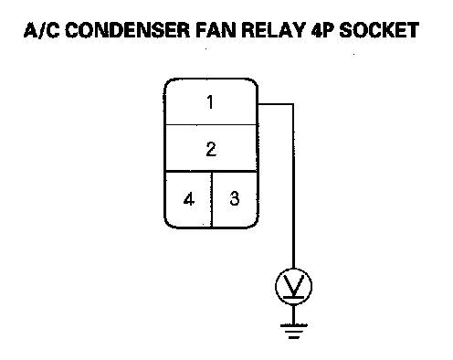
7. Measure the voltage between the A/C condenser fan relay 4P socket terminal No. 1 and body ground.
Is there battery voltage?
YES - Go to step 8.
NO - Replace the relay block.
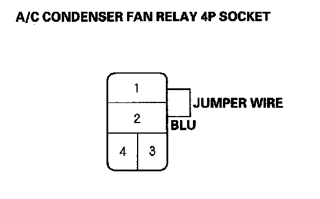
8. Connect the A/C condenser fan relay 4P socket terminals No. 1 and No. 2 with a jumper wire.
Do the A/C condenser and radiator fans run on low?
YES - Go to step 9.
NO - Go to step 18.
9. Disconnect the jumper wire.
10. Turn the ignition switch ON (II).
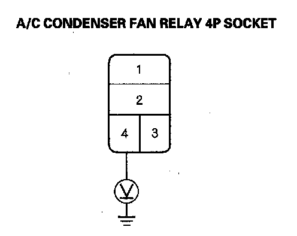
11. Measure the voltage between the A/C condenser fan relay 4P socket terminal No. 4 and body ground.
Is there battery voltage?
YES - Go to step 12.
NO - Go to step 36.
12. Turn the ignition switch OFF.
13. Reinstall the A/C condenser fan relay.
14. Jump the SCS line with the HDS.
NOTE: This step must be done to protect the powertrain control module (PCM) from damage.
15. Disconnect PCM connector A (49P).
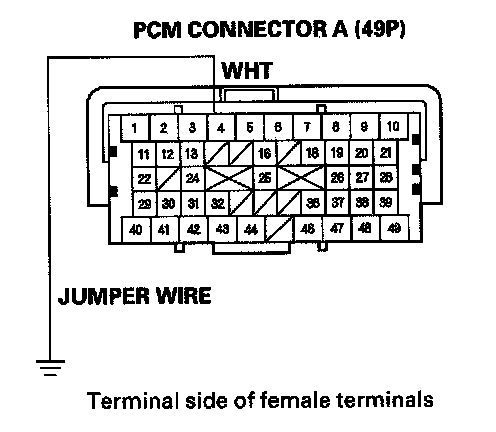
16. Connect the PCM connector A (49P) terminal No. 4 to body ground with a jumper wire.
17. Turn the ignition switch ON (II).
Do the A/C condenser and radiator fans run on low?
YES - Check for loose wires or poor connections at PCM connector A (49P) terminal No. 4. If the connections are good, substitute a known-good PCM, and recheck. If the symptom/indication goes away, replace the original PCM.
NO - Repair open in the wire between the A/C condenser fan relay and the PCM.
18. Disconnect the jumper wire.
19. Reinstall the A/C condenser fan relay.
20. Disconnect the A/C condenser fan 2P connector.
21. Turn the ignition switch ON (II), then set the A/C button and fan control button ON.
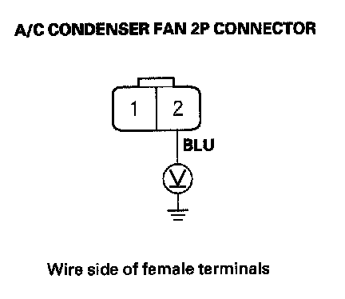
22. Measure the voltage between the A/C condenser fan 2P connector terminal No. 2 and body ground.
Is there battery voltage?
YES - Go to step 23.
NO - Repair open in the wire between the A/C condenser fan relay and the A/C condenser fan.
23. Set the A/C button and fan control button OFF, then turn the ignition switch OFF.
24. Reconnect the A/C condenser fan 2P connector.
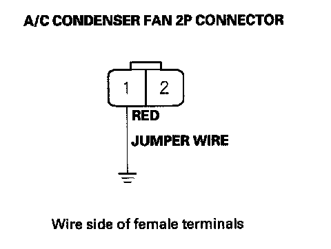
25. Connect the A/C condenser fan 2P connector terminal No. 1 to body ground with a jumper wire.
26. Turn the ignition switch ON (II), then set the A/C button and fan control button ON.
Does the A/C condenser fan run?
YES - Go to step 27.
NO - Replace the A/C condenser fan motor.
27. Set the A/C button and fan control button OFF, then turn the ignition switch OFF.
28. Disconnect the jumper wire.
29. Remove the fan control relay from the relay block, and test it.
Is the relay OK?
YES - Go to step 30.
NO - Replace the fan control relay.
30. Turn the ignition switch ON (II), then set the A/C button and fan control button ON.
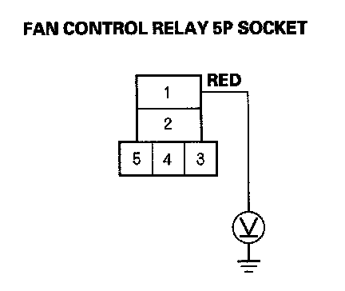
31. Measure the voltage between the fan control relay 5P socket terminal No. 1 and body ground.
Is there battery voltage?
YES - Go to step 32.
NO - Repair open in the wire between the A/C condenser fan and the fan control relay.
32. Set the A/C button and fan control button OFF, then turn the ignition switch OFF.
33. Disconnect the radiator fan 2P connector.
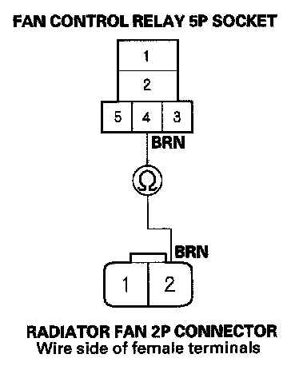
34. Check for continuity between the fan control relay 5P socket terminal No. 4 and the radiator fan 2P connector terminal No. 2.
Is there continuity?
YES - Go to step 35.
NO - Repair open in the wire between the fan control relay and the radiator fan.
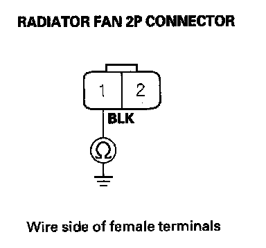
35. Check for continuity between the radiator fan 2P connector terminal No. 1 and body ground.
Is there continuity?
YES - Replace the radiator fan motor.
NO - Check for an open in the wire between the radiator fan and body ground. If the wire is OK, check for poor ground at G301.
36. Turn the ignition switch OFF.
37. Remove A/C diode A from the relay block.
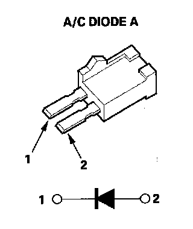
38. Using the diode setting ( -|<- ) on a DVOM, check for current flow in both directions between the A/C diode A terminals No. 1 and No. 2.
Is there current flow in only one direction?
YES - Go to step 39.
NO - Replace A/C diode A.
39. Turn the ignition switch ON (II).
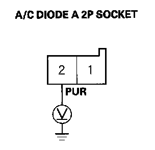
40. Measure the voltage between the A/C diode A 2P socket terminal No. 2 and body ground.
Is there battery voltage?
YES - Replace the relay block.
NO - Repair open in the wire between the No. 30 (10 A) fuse in the under-dash fuse/relay box and A/C diode A.